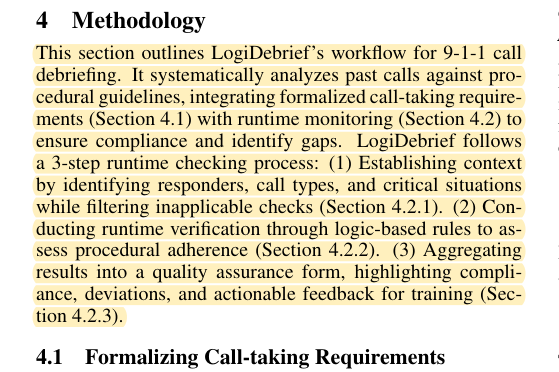
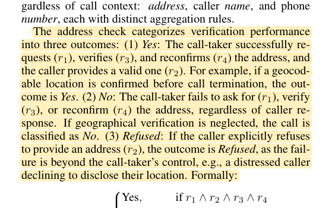
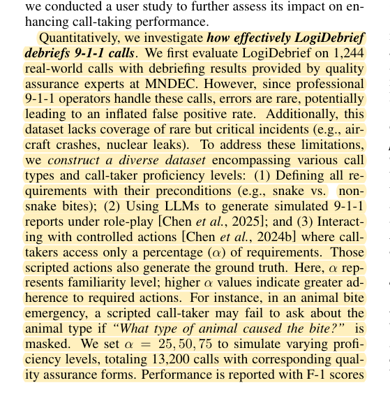

R24 · Rule and evidence algorithms
LogiDebrief is a direct predecessor for logic-based assessment
LogiDebrief: A Signal-Temporal Logic Based Automated Debriefing Approach with Large Language Models Integration
Zirong Chen, Ziyan An, Jennifer Reynolds, Kristin Mullen, Stephen Martini, Meiyi Ma · 2025
IJCAI 2025, 9582–9590; peer-reviewed conference paper
What the study investigates
Debriefing 9-1-1 calls requires checking procedures, conditions, and event order. Long-prompt assessment may not cover every requirement reliably. This structure closely resembles procedural OSCE evaluation.
How it was studied
Domain experts formalize requirements in signal temporal logic. The method establishes scenario applicability, uses LLM modules to interpret requirements, and aggregates logical checks into a quality report. Experiments use 1,244 real calls and 13,200 controlled simulated calls; deployment and usage are studied separately.
Findings
The paper reports improvements over several prompting and retrieval baselines. Semantic interpretation, logical aggregation, and educational feedback therefore already have substantial precedent. The reported 1,701 deployment uses are not an alternative count of the independent test sample.
Limits of the evidence
Logical scoring, applicability conditions, temporal checks, and controlled synthetic error coverage are not inventions of DualGraph-OSCE. Labels generated by controlled actions also highlight why the same engine should not create the truth used to validate itself.
How it informs DualGraph-OSCE
Our practical strong comparator is a conventional AI OSCE using full case information, retrieval, complete dialogue, and separate assessment; it is not a claimed reproduction of the entire LogiDebrief platform. LogiDebrief debriefs after a call, whereas the EGJ engine also checks permissions before a simulated role's next action is delivered. The proposed A/B comparison and linkage ablation test this bounded interaction dependency, rather than superiority over every temporal assessment method.
Where to cite it
Related work: a necessary logical-assessment predecessor. Method: novelty boundary. Evaluation: distinguish real, simulated, and deployment data.
Possible manuscript wording
LogiDebrief combines domain procedures, temporal logic, and LLM interpretation for call assessment. DualGraph-OSCE investigates additional dependencies between AI role actions and learner evidence in pharmacy stations.
[R24·1]This is a manuscript-specific paraphrase, not a quotation from the source. The excerpts below define what the citation supports. The proposed method and its expected benefits are not findings of the cited paper.
Source passages and precise locations
Page numbers refer to physical pages in the saved original PDF, including any repository cover sheets. Compilation page numbers are listed separately. Yellow highlighting marks the passage used for the argument.
R24-E1Three-stage method
Original PDF page 3. Highlight compilation page 370. The highlight identifies the passage used here; consult the full original page for its context.

R24-E2Separate interpretation of operator behavior and caller response
Original PDF page 5. Highlight compilation page 372. The highlight identifies the passage used here; consult the full original page for its context.

R24-E3Real and simulated evaluation design
Original PDF page 6. Highlight compilation page 373. The highlight identifies the passage used here; consult the full original page for its context.
